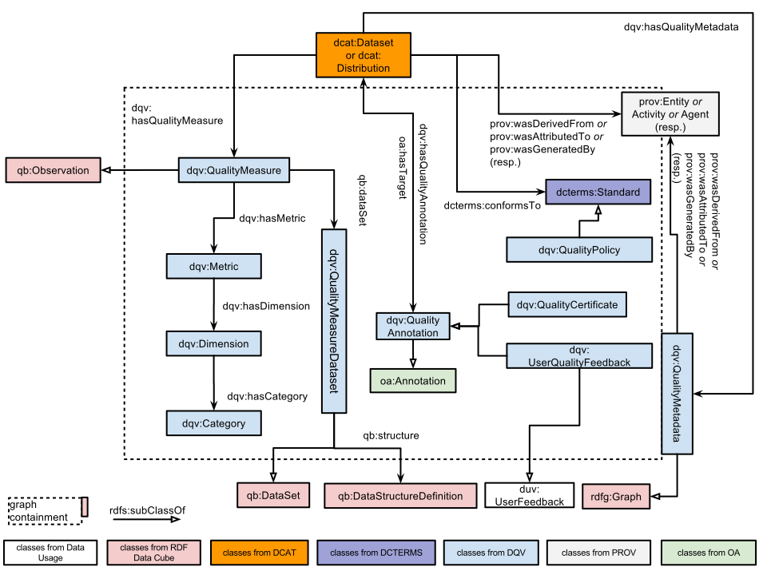

This document provides a framework in which the quality of a dataset can be described, whether by the dataset publisher or by a broader community of users. It does not provide a formal, complete definition of quality, rather, it sets out a consistent means by which information can be provided such that a potential user of a dataset can make his/her own judgment about its fitness for purpose.
Status of This Document
This section describes the status of this document at the time of its publication. Other documents may supersede this document. A list of current W3C publications and the latest revision of this technical report can be found in the W3C technical reports index at http://www.w3.org/TR/.
Publication as a Working Draft does not imply endorsement by the W3C
Membership. This is a draft document and may be updated, replaced or obsoleted by other
documents at any time. It is inappropriate to cite this document as other than work in
progress.
The Data on the Web Best Practices Working Draft has pointed out the relevance of publishing information about the quality of data published on the Web.
Accordingly, the Data on the Web Best Practices Working Group has been chartered to create a vocabulary for expressing data quality. The Data Quality Vocabulary (DQV) presented in this document is foreseen as an extension to DCAT [vocab-dcat] to
cover the quality of the data, how frequently is it updated, whether
it accepts user corrections, persistence commitments etc. When used
by publishers, this vocabulary will foster trust in the data amongst
developers.
This vocabulary does not seek to determine what "quality" means. We believe that quality lies in the eye of the beholder; that there is no objective, ideal definition of it.
Some datasets will be judged as low-quality resources by some data consumers, while they will perfectly fit others' needs.
In accordance, we attach a lot of importance to allowing many actors to assess the quality of datasets and publish their annotations, certificates, opinions about a dataset.
A dataset's publisher should seek to publish metadata that helps data consumers determine whether they can use the dataset to their benefit.
However, publishers should not be the only ones to have a say on the quality of data published in an open environment like the Web. Certification agencies, data aggregators, data consumers can make relevant quality assessments, too.
We want to stimulate this by making it easier to publish, exchange and consume quality metadata, for every step of a dataset's lifecycle.
This is why next to rather expected constructs like quality measures, the Data Quality Vocabulary puts a lot of emphasis on feedback, annotation, agreements and the provenance of the metadata that describes them.
2. Conformance
As well as sections marked as non-normative, all authoring guidelines, diagrams, examples,
and notes in this specification are non-normative. Everything else in this specification is
normative.
3. Namespaces
The namespace for DQV is provisionally set as http://www.w3.org/ns/dqv#.
DQV, however, seeks to re-use elements from other vocabularies, following the best practices for data vocabularies identified by the Data on the Web Best Practices Working Group.
Note
The Working Group is considering to put all new classes and properties defined in the DWBP Vocabularies in the DCAT namespace. As an attempt to stimulate reactions which might help in taking a decision, the Data Usage Vocabulary will be moved under the DCAT namespace. In case of positive reactions to the DUV choice, the data quality vocabulary might consider to go in the same direction.
The table below indicates the full list of namespaces and prefixes used in this document.
Prefix
Namespace
daq
http://purl.org/eis/vocab/daq#
dcat
http://www.w3.org/ns/dcat#
dcterms
http://purl.org/dc/terms/
dqv
http://www.w3.org/ns/dqv#
duv
http://www.w3.org/ns/duv#
oa
http://www.w3.org/ns/oa#
prov
http://www.w3.org/ns/prov#
4. Vocabulary Overview
The following vocabulary is based on DCAT [vocab-dcat] that
it extends with a number of additional properties and classes
suitable for expressing the quality of a dataset.
The quality of a given dataset of distribution is assessed via a
number of observed properties. For instance, one may consider a
dataset to be of high quality because it complies to a specific
standard while for other use-cases the quality of the data will
depend on its level of interlinking with other datasets. To express
these properties an instance of a dcat:Dataset
or dcat:Distribution
can be related to four different classes:
dqv:QualityAnnotation represents feedbacks and quality certificates given
about the dataset or its distribution.
dcterms:Standard
represents a standard the dataset or its distribution conforms to.
prov:Entity
represents an entity involved in the provenance of the
dataset or distribution.
dqv:QualityMeasure
represents a metric value providing quantitative or
qualitative information about the dataset or distribution.
Note
Textual description of the diagram will be added.

Fig. 1
Data model showing the main relevant classes and their relations.
N.B.: "graph containment" refers to the inclusion of quality statements in (RDF) graphs, e.g., for capturing the provenance of quality statements (see later example)
Issue 1
Should we have only the existing class dqv:QualityMeasureDataset
or keep the new class dqv:QualityMetadata
to represent a set of statements providing quantitative and/or
qualitative information about the dataset or distribution. One could be a sub-class of the other. (Issue-181)
Issue 2
Is an dqv:QualityPolicy a subclass of dcterms:Standard? The wording in the Dublin Core specification is very open ("A basis for comparison; a reference point against which other things can be evaluated"), but the label is quite restrictive. At the time of discussion a majority of WG members is ok with subclassing, but we welcome public feedback before making a final decision
(Issue-199)
5. Vocabulary specification
Note
This section is work in progress. We will include later more tables with specification of individual classes and properties.
5.1 Class: Quality Measure
DQV defines quality measures as specific instances of DQV observations, adapting the DAQ quality metrics framework [DaQ], [DaQ-RDFCUBE]:
A Quality Dimension is a characteristic of a dataset relevant to the consumer (e.g., the availability of a dataset).
A Quality Metric gives a procedure for measuring a data quality dimension, which is abstract, by observing a concrete quality indicator. There are usually multiple metrics per dimension; e.g., availability can be indicated by the accessibility of a SPARQL endpoint, or of an RDF dump. The value of a metric can be numeric (e.g., for the metric “human-readable labeling of classes, properties and entities”, the percentage of entities having an rdfs:label or rdfs:comment) or boolean (e.g. whether or not a SPARQL endpoint is accessible).
For example, a dimension could be "multilinguality" and two metrics could be "ratio of literals with language tags" and "number of different language tags".
Should (and if yes, how) DQV represent multiple/derived values for a metric (e.g., average or normalized value)? (Issue-222)
Issue 4
Should (and if yes, how) DQV represent parameters for a metric applied for computing a specific quality measure (e.g.,a specific setting of weights)? (Issue-223)
Refers to the resource (e.g., a dataset, a linkset, a graph, a set of triples) on which the quality measurement is performed. In the DQV context, this property is generally expected to be used in statements in which objects are instances of dcat:Dataset and dcat:Distribution.
The following properties should be used on this class: dqv:hasDimension.
Issue 5
In daQ, the property daq:expectedDataType associates each metric to the expected data type for its observed value. Data types for observed values are restricted to xsd:anySimpleType (e.g. xsd:boolean, xsd:double etc…). Is the current practice of using daq:expectedDataType in daQ appropriate? Isn't the restriction to xsd:anySimpleType too narrow? (Issue-224)
Dimensions are meant to systematically organize metrics. The Data Quality Vocabulary defines no specific cardinality constraints for dqv:hasDimension, since distinct quality frameworks might have different perspectives over a metric. A metric may therefore be associated to more than one dimension. However, those who define new quality measures should try to avoid this as much as possible and assign only one dimension to the metrics they define.
5.3 Class: Dimension
The following properties should be used on this class: dqv:hasCategory.
Represents criteria relevant for assessing quality. Each quality dimension must have one or more metric to measure it. A dimension is linked with a category using the dqv:hasDimension property.
Categories are meant to systematically organize dimensions. The Data Quality Vocabulary defines no specific cardinality constraints for dqv:hasCategory, since distinct quality frameworks might have different perspectives over a dimension. A dimension may therefore be associated to more than one category. However, those who define new quality measures should try to avoid this as much as possible and assign only one category to the dimensions they define.
Represents quality annotations, including rating, quality certificate, feedback that can be associated to datasets or distributions. Quality annotations must have one oa:motivatedBy statement with an instance of oa:Motivation (and skos:Concept), which reflects a quality assessment purpose. We define this instance as dqv:qualityAssessment.
Should we exploit predefined instances of oa:Motivation to further characterize a user's feedback purposes? (Issue-201)
Combining the predefined instances of oa:Motivation with the dqv:qualityAssessment we could distinguish different kinds of for user feedbacks, for example:
dqv:qualityAssessment plus oa:editing might indicate a request for a modification or edit, which relates to the quality of the target dataset/distribution
dqv:qualityAssessment plus oa:questioning might express a question issued about specific quality of the dataset/distribution
dqv:qualityAssessment plus oa:classification might represent the assignment of a classification type, typically from a controlled vocabulary or list, to the target resource(s). For example, it could be used to classify a dataset/distribution against a rating system (e.g., the 5 Stars linked open data rating system).
6. Example Usage
This section is non-normative.
This section shows some examples to illustrate the application of the Dataset Quality Vocabulary.
Note
This section is still work in progress. Further examples will be provided as soon as some of the pending issues are resolved. We invite the public to contact the editors and submit relevant examples of quality data, even not yet represented in DQV. We welcome your input!
NB: in the remainder of this section, the prefix ":" refers to http://example.org/
6.1 Express a quality assessment with quality metrics
Let us consider a dataset myDataset, and its distribution myDatasetDistribution,
:myDataset
a dcat:Dataset ;
dcterms:title "My dataset" ;
dcat:distribution :myDatasetDistribution
.
:myDatasetDistribution
a dcat:Distribution ;
dcat:downloadURL <http://www.example.org/files/mydataset.csv> ;
dcterms:title "CSV distribution of dataset" ;
dcat:mediaType "text/csv" ;
dcat:byteSize "87120"^^xsd:decimal
.
An automated quality checker has provided a quality assessment with two (CSV) quality measures for myDatasetDistribution.
:myDatasetDistribution
dqv:hasQualityMeasure :measure1, :measure2
.
:measure1
a dqv:QualityMeasure ;
dqv:computedOn :myDatasetDistribution ;
dqv:metric :csvAvailabilityMetric ;
dqv:value "1.0"^^xsd:double
.
:measure2
a dqv:QualityMeasure ;
dqv:computedOn :myDatasetDistribution ;
dqv:metric :csvConsistencyMetric ;
dqv:value "0.5"^^xsd:double
.
#definition of dimensions and metrics
:availabity
a dqv:Dimension ;
dqv:hasCategory :category1;
.
:consistency
a dqv:Dimension ;
dqv:hasCategory :category2
.
:csvAvailabilityMetric
a dqv:Metric ;
dqv:hasDimension :availabity
.
:csvConsistencyMetric
a dqv:Metric ;
dqv:hasDimension :consistency
.
Categories and dimensions might be more extensively defined, see in the section 'Dimensions and metrics hints' for further examples.
Any quality framework is free to define its own dimensions and categories.
Issue 7
Is there any reason for turning the classes dqv:Dimension, dqv:Metric and dqv:Category as well as the properties dqv:hasDimension and dqv:hasCategory into "abstract" classes and properties as they were defined in daQ (see Section "Extending the daQ" here)? (Issue-204)
Issue 8
Should we represent dimensions and categories as instances of skos:Concept? This would allow publishers of quality framework to express (hierarchical) relations between dimensions or categories. This could also enable to align with quality-focused categorizations less focused on metrics. Including the DWBP Best Practices dimensions, or even the parts of DQV about annotations. (Issue-205)
6.2 Document the provenance of the quality metadata
The results of metrics obtained in the previous assessment are stored in the myQualityMetadata graph.
# myQualityMatadata is a graph
:myQualityMetadata {
:myDatasetDistribution
dqv:hasQualityMeasure :measure1, :measure2
.
# The graph contains the rest of the statements presented in the previous example.
}
# myQualityMetadata has been created by: qualityChecker and it is the result of the :qualityChecking activity
:myQualityMetadata
a dqv:QualityMetadata ;
prov:wasAttributedTo :qualityChecker ;
prov:generatedAtTime "2015-05-27T02:52:02Z"^^xsd:dateTime ;
prov:wasGeneratedBy :qualityChecking
.
# qualityChecker is a service computing some quality metrics
:qualityChecker
a prov:SoftwareAgent ;
rdfs:label "a quality assessment service"^^xsd:string
# We should probably suggest to add more info about the services
.
# the qualityChecking is the activity that has generated myQualityMetadata starting from MyDatasetDistribution
:qualityChecking
a prov:Activity;
rdfs:label "the checking of myDatasetDistribution's quality"^^xsd:string;
prov:wasAssociatedWith :qualityChecker;
prov:used :myDatasetDistribution;
prov:generated :myQualityMetadata;
prov:endedAtTime "2015-05-27T02:52:02Z"^^xsd:dateTime;
prov:startedAtTime "2015-05-27T00:52:02Z"^^xsd:dateTime
.
6.3 Document the provenance of single quality measurement
Note
The group has discussed provenance at different level of granularity (dqv:QualityMeasure and dqv:QualityMetadata), so we might consider to add an example of provenance for dqv:QualityMeasure.
6.4 Document the provenance of a dataset
Statements similar to the ones applied to the resource myQualityMetadata above can be applied to the resource myDataset to indicate the provenance of the dataset. I.e., a dataset can be generated by a specific software agent, be generated at a certain time, etc. The HCLS Community Profile for describing datasets provides further examples.
6.5 Express that a dataset received an ODI certificate
Let us express that an ODI certificate for the "City of Raleigh Open Government Data" dataset is available at the URL <https://certificates.theodi.org/en/datasets/393/certificate>.
<https://certificates.theodi.org/en/datasets/393> a dcat:Dataset ;
dqv:hasQualityAnnotation :myDatasetQA .
:myDatasetQA
a dqv:QualityCertificate ;
oa:hasTarget <https://certificates.theodi.org/en/datasets/393> ;
oa:hasBody <https://certificates.theodi.org/en/datasets/393/certificate> ;
oa:motivatedBy dqv:qualityAssessment .
6.6 Express quality of SKOS concept schemes
Let’s consider myControlledVocabulary, a controlled vocabulary made available on the Web using the SKOS [SKOS] and DCAT [vocab-dcat].
:myControlledVocabulary
a dcat:Dataset ;
dcterms:title "My controlled vocabulary"
.
:myControlledVocabularyDistribution
a dcat:Distribution ;
dcat:downloadURL <http://www.example.org/files/myControlledVocabulary.csv> ;
dcterms:title "SKOS/RDF distribution of my controlled vocabulary"" ;
dcat:mediaType "text/turtle" ;
dcat:byteSize "190120"^^xsd:decimal
.
qSKOS is an open source tool, which detects quality issues affecting SKOS vocabularies [qSKOS]. It considers 26 quality issues including, for example, “Incomplete Language Coverage” and “Label Conflicts” which are grouped in the category “Labeling and Documentation issues”. Quality issues addressed by qSKOS can be considered as DQV quality dimensions, whilst the number of concepts in which a quality issue occurs can be the metric deployed for each quality dimension.
# definition of instances for some of the metrics, dimensions and categories deployed in qSKOS.
:numOfConceptsWithLabelConflicts
a dqv:Metric;
rdfs:label "Conflicting concepts"@en ;
rdfs:comment "Number of concepts having conflicting labels"@en ;
dqv:hasDimension :LabelConflicts
.
:numOfConceptsWithIncompleteLanguageCoverage
a dqv:Metric;
rdfs:label "Language incomplete concepts"@en ;
rdfs:comment "Number of concepts having an incomplete language coverage"@en ;
dqv:hasDimension :incompleteLanguageCoverage .
:LabelConflicts
a dqv:Dimension;
rdfs:label "Label Conflicts"@en ;
rdfs:comment "Dimension corresponding to the label conflicts quality issue"@en ;
dqv:hasCategory :labelingDocumentationIssues .
:incompleteLanguageCoverage
a dqv:Dimension;
rdfs:label "Incomplete Language Coverage"@en ;
rdfs:comment "Dimension corresponding to the incomplete language coverage issue"@en ;
dqv:hasCategory :labelingDocumentationIssues .
:labelingDocumentationIssues
a dqv:Category ;
rdfs:label "Labeling and Documentation Issues"@en ;
rdfs:comment "Category grouping labeling and documentation issues"@en ;
.
DQV represents the qSKOS quality assessment on myControlledVocabulary for the dimensions “Incomplete Language Coverage” and “Label Conflicts”.
(VoID) linksets are collections of (RDF) links between two datasets. Linksets are as important as datasets when it comes to the joint exploitation of independently served datasets in linked data. The representation of quality for a linkset offers a further example of how DQV can be exploited.
Let’s define three DCAT datasets, including one VoID linkset, which connects the two others:
:myDataset1
a dcat:Dataset ;
dcterms:title "My dataset 1"
.
:myDataset2
a dcat:Dataset ;
dcterms:title "My dataset 2"
.
:myLinkset
a dcat:Dataset, void:Linkset ;
dcterms:title "A Linkset between My dataset 1 and My dataset 2";
void:linkPredicate skos:exactMatch ;
void:target :myDataset1 ;
void:target :myDataset2
.
We can represent information about the quality of :myLinkset using the “Multilingual importing” [MultilingualImporting] linkset quality metric. This metrics works on linksets between datasets that include SKOS concepts [SKOS]. It quantifies the information gain when adding the preferred labels or the alternative labels of the concepts from a linked dataset to the descriptions of the concepts from the other dataset, which these concepts have been matched with a skos:exactMatch statement from the linkset. We must first define the proper metric, dimension and category.
# Definition of instances for Metric, Dimension and Category.
:importingForPropertyPercentage
a dqv:Metric;
dqv:hasDimension :completeness.
:completeness
a dqv:Dimension;
dqv:hasCategory :complementationGain .
:complementationGain
a dqv:Category .
The quality assessment of the "label importing" can be made dependent on two extra parameters: property and language, respectively the SKOS property and the language tag. We extend DQV to represent these parameters.
Issue 9
We need to further evaluate the way we add extra parameters for the metric and extend the DAQ RDF-CUBE data structure (postponed issue)
:language
a qb:DimensionProperty, owl:DataProperty ;
rdfs:comment "language on which label importing is assessed."@en ;
rdfs:domain dqv:QualityMeasure;
rdfs:label "label import assessment language"@en .
:property
a qb:DimensionProperty, rdf:Property ;
rdfs:comment "property which label importing is assessed."@en ;
rdfs:domain dqv:QualityMeasure ;
rdfs:label "label import assessment property"@en ;
rdfs:range rdf:Property .
Let us add actual quality assessments:
:qualityMeasureDataset a dqv:QualityMeasureDataset ;
qb:structure :dsd .
:importingForPropertyPercentage
# should dqv:hasObservation be added as inverse of dqv:metric?
dqv:hasObservation :exactMatchaltLabelit1 , :exactMatchaltLabelit2 ,
:exactMatchaltLabelen1 , :exactMatchaltLabelen2,
:exactMatchprefLabelit1, :exactMatchprefLabelit2 .
#Adding quality observations
## for Italian alternative labels
:measure_exactMatchAltLabelItDataset1
a dqv:QualityMeasure;
dqv:computedOn :myLinkset ;
dqv:value "1.0"^^xsd:double ;
dqv:metric :importingForPropertyPercentage ;
qb:dataSet :qualityMeasureDataset;
:language "it" ;
:property skos:altLabel .
:measure_exactMatchAltLabelItDataset2
a dqv:QualityMeasure;
dqv:computedOn :myLinkset ;
dqv:value "1.0"^^xsd:double ;
dqv:metric :importingForPropertyPercentage ;
qb:dataSet :qualityMeasureDataset;
:language "it" ;
:property skos:altLabel .
## for English alternative labels
:measure_exactMatchAltLabelEnDataset1
a dqv:QualityMeasure;
dqv:computedOn :myLinkset ;
dqv:value "0.1"^^xsd:double ;
dqv:metric :importingForPropertyPercentage ;
qb:dataSet :qualityMeasureDataset;
:language "en" ;
:property skos:altLabel .
:measure_exactMatchAltLabelEnDataset2
a dqv:QualityMeasure;
dqv:computedOn :myLinkset ;
dqv:value "1.0"^^xsd:double ;
dqv:metric :importingForPropertyPercentage ;
qb:dataSet :qualityMeasureDataset;
:language "en" ;
:property skos:altLabel .
## for Italian preferred labels
:measure_exactMatchPrefLabelItDataset1
a dqv:QualityMeasure;
dqv:computedOn :myLinkset ;
dqv:value "0.5"^^xsd:double ;
dqv:metric :importingForPropertyPercentage ;
qb:dataSet :qualityMeasureDataset;
:language "it" ;
:property skos:prefLabel .
:exactMatchprefLabelit2
a dqv:QualityMeasure;
dqv:computedOn :myLinkset ;
dqv:value "0.5"^^xsd:double ;
dqv:metric :importingForPropertyPercentage ;
qb:dataSet :qualityMeasureDataset;
:language "it" ;
:property skos:prefLabel .
Let us specify the RDF Data Cube data structure:
:dsd a qb:DataStructureDefinition ;
##Copying the structure of daq:dsq
qb:component [ qb:dimension dqv:computedOn ;
qb:order 2
] ;
qb:component [ qb:measure dqv:value] ;
qb:component [ qb:dimension <http://purl.org/linked-data/sdmx/2009/dimension#timePeriod> ;
qb:order 3
] ;
qb:component [ qb:dimension dqv:metric ;
qb:order 1
] ;
qb:component [ qb:measure dqv:value;];
# Attribute (here: unit of measurement)
qb:component [
qb:attribute sdmx-attribute:unitMeasure
;
qb:componentRequired false ;
qb:componentAttachment qb:DataSet ; ] ;
##Extending the structure of lds:dsq with two new dimensions
qb:component [ qb:dimension :property ;
qb:order 4
] ;
qb:component [ qb:dimension :language ;
qb:order 5
] .
6.8 Express the conformance of a dataset's metadata with a standard
It is often desirable to indicate that metadata about datasets in a catalogue are compliant with a metadata standard, or an application profile of an existing metadata standard. A typical example is the GeoDCAT Application Profile [GeoDCAT-AP], an extension of the DCAT vocabulary [vocab-dcat] to represent metadata for geospatial data portals. GeoDCAT-AP enables to express that a dataset's metadata conforms to an existing standard, following the recommendations of ISO 19115, ISO
19157 and the EU INSPIRE directive. DCAT partly supports the expression of such metadata conformance statements. The following example illustrates how a (DCAT) catalog record can be said to be conformant with the GeoDCAT-AP standard itself.
ex:myDataset a dcat:Dataset;
ex:myDatasetRecord a dcat:CatalogRecord ;
foaf:primaryTopic :myDataset ;
dcterms:conformsTo :geoDCAT-AP .
ex:geoDCAT-AP a dcterms:Standard;
dcterms:title "GeoDCAT Application Profile" ;
dcterms:comment "GeoDCAT-AP is developed in the context of the Interoperability Solutions for European Public Administrations (ISA) Programme"@en;
dcterms:issued "201X-XX-XX"^^xsd:date .
Note that this example does not include the metadata about the dataset ex:myDataset itself. We assume this is present in an RDF data source accessible via the URI ex:myDatasetRecord. We also assume that ex:geoDCAT-AP is a reference URI that denotes the GeoDCAT-AP standard, which can be re-used across many catalog record descriptions, not just a locally introduced URI.
Issue 10
Relation between DQV, ISO 19115/19157 and GeoDCAT-AP: DQV is already able to express the notion of "conformance" to a standard using the property dcterms:conformsTo.
However, there were suggestion to be further compatible with ISO 19157:2013 and INSPIRE by adding respectively "Not conformant" and "Not evaluated" as possible properties or values.
Should DQV be this expressive? (Issue-202)
7. Dimensions and metrics hints
This section is non-normative.
Note
This section will be refined as soon as Issue-204 and Issue-205 are solved. In particular, following the discussion on Issue-200, we plan to align the DQV dimension classification with the ISO 25012 [ISOIEC25012] and to provide the classification proposed in Zaveri Et Al. [ZaveriEtAl] as a further example.
Suggestions on possible mappings between ISO 25012 and Zaveri et al.'s dimensions as well as any other well-known classification are welcome.
This section gathers relevant quality dimensions and ideas for corresponding metrics, which might be eventually represented as instances
of daq:Dimension and daq:Metric. The goal is not to define a normative list of dimensions and metrics,
rather, the section provides a set of examples starting from use cases included in the
Use Cases & Requirements document
and from the following sources:
Are the levels of granularity of dqv:Dimension and dqv:Category well-defined enough and fit for purpose? (Issue-225)
7.1 Statistics
The following table gives example on statistics that can be computed on a dataset and interpreted as quality indicators by the data consumer. Some of them can be relevant for the dimensions listed in the rest of this section. The properties come from the VoID extension created for the Aether tool.
Number of distinct external resources used (including schema terms)
http://ldf.fi/void-ext#distinctIRIReferences
Number of distinct literals
http://ldf.fi/void-ext#distinctLiterals
Number of languages used
http://ldf.fi/void-ext#languages
Note
The Aether VoID extension represents statistics as direct statements
that have a dataset as subject and an integer as object. This pattern, which can be expected to be rather common, is different from
the pattern that DQV inherits from DAQ (see examples).
Guidance on how DQV/daQ can work with other quality statistics vocabulary will be provided.
7.2 Availability
Can the data be accessed now and over time?
Yes/no, maybe with explanation why the data is not available
(privacy, security, archived, lost, not yet captured etc.)
Open/restricted/registration, again possibly with
explanation
For access/re-use
Indication of persistence and longevity
Since a dcat:Dataset is an abstract thing, it might be
available at any point in time, past present or future. We already
have dcterms:issued so two properties come to mind:
dcat:verifiedAvailableOn {date} (the last time
someone/something checked that the dataset was accessible, probably
applies to a dcat:Distribution, not dcat:Dataset)
dcat:availableUntilAtLeast {date} (Potentially a data on
which the dataset is expected to be withdrawn)
Other questions that come to mind: how do we indicate that the
dataset is expected to be available 'for the foreseeable future?'
7.3 Processability
Is the data machine readable ?
Level on the 5-star scale (although there were opinions that
it is dangerous to attach value to the linking because the data
might be good but link to ‘bad’ data)
Links to metadata standards used and data model/schema to
enable automatic processing
7.4 Accuracy
is the data correctly representing the real-world entity or event?
7.5 Consistency
Is the data not containing contradictions?
Can I use it readily in an analysis tool? Can I open the dataset in R and do some statistical manipulations? Can I open it in Tableau and make a visualization without doing a lot of cleaning?
There could be some overlap with accuracy.
7.6 Relevance
Does the dataset include an appropriate amount of data?
It might be useful to include some information about the
context (e.g., why was the data created and what purpose is it
supposed to serve).
7.7 Completeness
Does the data include all data items representing the entity or event ?
7.8 Conformance
Is the data following accepted standards ?
7.9 Credibility
Is the data based on trustworthy sources ?
This is described using the provenance vocabulary PROV-O
7.10 Timeliness
Is the data representing the actual situation and it is published soon enough ?
R-DataMissingIncomplete: 'Publishers should indicate if data
is partially missing or if the dataset is incomplete'
R-QualityComparable: 'Data should be comparable with other
datasets'
R-Data should be complete: 'Data should be complete'
R-QualityMetrics: 'Data should be associated with a set of
documented, objective and, if available, standardized quality
metrics. This set of quality metrics may include user-defined or
domain-specific metrics.'
R-QualityOpinions: 'Subjective quality opinions on the data
should be supported'
R-GranularityLevels: 'Data available at different levels of
granularity should be accessible and modeled in a common way'
We have to confirm whether the scope of DQV work is indeed these
"official" DQV reqs or if we should go beyond, e.g., reflecting the
quality of the vocabulary (re-)used, access to datasets, metadata
and more generally the implementation of our best practices (cf. the
"5
stars" thread).
The distinction between Intrinsic
and extrinsic metadata may help making choices here. For example,
DQV could be defined wrt. intrinsic properties of the datasets, not
extrinsic properties (let alone properties of the metadata for a
dataset!) (Issue-190)
Issue 13
Backward compatibility with DAQ and RDF Data Cube: DAQ exploits Data Cube to make metric results consumable by visualisers such as CubeViz (see Jeremy's paper). This may be useful to preserve in DQV. (Issue-191)
Issue 14
The W3C Human Care and Life Science Community Group has created a DCAT profile for describing datasets. This is work is well visible and used in the HCLS community. DQV should be aligned with this profile if there are overlapping areas. Are there such areas? (Issue-221)
Revision of the section "Vocabulary Specification".
Inclusion of "Vocabulary Specification" subsections describing Dimension, Category, Quality Measure Dataset, Quality Annotation, User Quality Feedback.
Inclusion of new examples to express (i) that a dataset received an ODI certificate, (ii) the quality of SKOS concept schemes, (iii) the quality of linksets, (iv) the conformance of a dataset's metadata with a standard.
Revision of the document according to resolved issues.
Inclusion of new open issues arising from group discussion and external feedback.
Creation of an RDF file for DQV at http://www.w3.org/ns/dqv#.